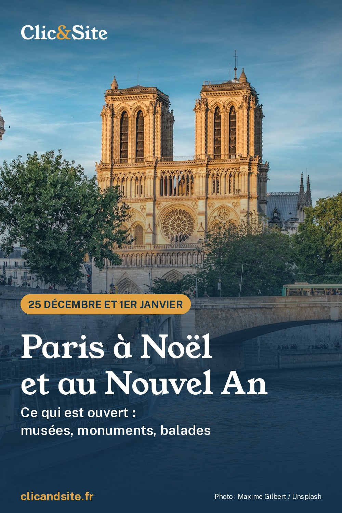

Paris le 25 décembre et le 1er janvier : ce qui est ouvert, ce qui est fermé
Orsay ouvert le 1er janvier, Louvre et Versailles fermés, Notre-Dame et le Sacré-Cœur tous les jours : le point pour Noël 2026 et le Jour de l’An 2027.
Photo : Pierre Blaché / Unsplash
Noël 2026 et le Jour de l’An 2027 tombent tous les deux un vendredi. Beaucoup de grands musées et monuments de Paris ferment ces jours-là, mais pas tous : voici ce qui reste ouvert, ce qui ferme, et nos idées pour en profiter. Liste établie à partir des horaires de nos guides, relevés en novembre 2026.
Ouvert le 25 décembre et le 1er janvier
- La tour Eiffel : ouverte tous les jours, y compris le 25 décembre et le 1er janvier, à partir de 9 h 30 ; le 31 décembre, elle ferme plus tôt, à 21 h.
- Notre-Dame : ouverte tous les jours, entrée gratuite (réservation conseillée).
- Le Sacré-Cœur : la basilique est ouverte tous les jours de 6 h 30 à 22 h 30, entrée libre.
- Le musée Grévin : ouvert tous les jours, de 9 h 30 à 19 h les jours fériés et pendant les vacances scolaires.
- Les marchés de Noël : celui des Tuileries est ouvert tous les jours de 11 h à 23 h 30 jusqu’au 3 janvier 2027 ; celui des Champs-Élysées dure jusqu’au 4 janvier.
Ouvert le 1er janvier, fermé le 25 décembre
- Le musée d’Orsay : fermé le lundi, le 1er mai et le 25 décembre, il est donc ouvert le vendredi 1er janvier 2027.
- Le musée de l’Orangerie : fermé le mardi, le 1er mai, le matin du 14 juillet et le 25 décembre, il est ouvert le 1er janvier.
- La Conciergerie : ouverte tous les jours de 9 h 30 à 18 h, sauf le 1er mai et le 25 décembre.
Le 1er janvier, Orsay, l’Orangerie et la Conciergerie font partie des rares grands sites ouverts : réservez un billet à créneau horaire.
Fermé le 25 décembre et le 1er janvier
- Le Louvre, le château de Versailles et Fontainebleau
- L’Arc de Triomphe, la Sainte-Chapelle, le Panthéon et le château de Vincennes
- Les Invalides (musée de l’Armée et tombeau de Napoléon)
- Le musée Picasso, le musée Rodin et les Catacombes
- La Cité des sciences, à La Villette
Nos idées pour ces deux jours
- Une croisière sur la Seine : Paris illuminé depuis le fleuve, en journée ou avec un dîner ; voir notre guide des croisières.
- Une balade à pied dans Montmartre, sur l’île Saint-Louis ou le long des Champs-Élysées illuminés.
- Le Panthéon gratuit le dimanche 3 janvier 2027 : il est gratuit pour tous le premier dimanche du mois, de novembre à mars.
- La veille au soir, le 31 décembre, la Ville de Paris organise le feu d’artifice gratuit des Champs-Élysées : voir nos idées de réveillon.
Les 24 et 31 décembre, certains sites ferment plus tôt que d’habitude : vérifiez les horaires sur le site officiel avant de partir. Pour toute la période, voir aussi nos idées pour les vacances de Noël et que faire à Paris en hiver.
Horaires relevés en novembre 2026 sur nos pages de chaque lieu ; ils peuvent changer, vérifiez avant de partir.
Nos guides pour les fêtes


Activités à réserver
Quelques idées à réserver pour les fêtes.
-
Billets et visites du musée d’Orsay
Billets à créneau horaire et visites guidées des impressionnistes.
-
Tour des illuminations de Noël
Visites en bus, à pied ou en bateau pour voir Paris illuminé.
-
Dîner croisière de Noël sur la Seine
Menus de fête à bord, avec vue sur les monuments éclairés.
-
Croisières commentées sur la Seine
Une heure au départ de la tour Eiffel ou du pont de l’Alma.
Liens partenaires.
Vous partez pendant les fêtes ? Voir notre calendrier des vacances de Noël 2026.

Questions fréquentes
Quels musées sont ouverts le 1er janvier à Paris ?
Parmi les grands musées, le musée d’Orsay et le musée de l’Orangerie sont ouverts le 1er janvier ; le Louvre, Versailles, le musée Picasso et le musée Rodin sont fermés. Notre-Dame, le Sacré-Cœur et le musée Grévin sont ouverts tous les jours.
La tour Eiffel est-elle ouverte le 25 décembre et le 1er janvier ?
Oui, la tour Eiffel est ouverte tous les jours, y compris le 25 décembre et le 1er janvier, à partir de 9 h 30. Le 31 décembre 2026, elle ferme plus tôt, à 21 h.
Le Louvre est-il ouvert le 25 décembre ?
Non, le Louvre est fermé le 25 décembre, le 1er janvier et le 1er mai, ainsi que tous les mardis.
Que faire à Paris le jour de Noël ?
Visiter Notre-Dame ou le Sacré-Cœur, flâner au marché de Noël des Tuileries (ouvert tous les jours jusqu’au 3 janvier 2027), voir les illuminations des Champs-Élysées ou faire une croisière sur la Seine.